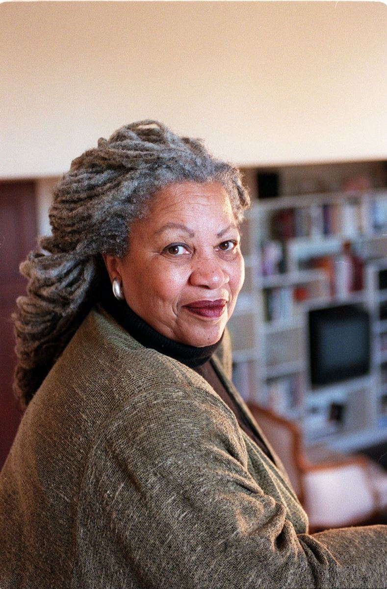

- 50 -

Toni Morrison [1931 - 2019]
Bà Toni Morrison [Sinh 1931] nữ tác giả kiêm học giả, đã trở thành người Mỹ da đen đầu tiên được trao tặng giải Nobel văn học với những tác phẩm “miêu tả nước Mỹ da đen đầy chất thơ và sức biểu cảm”. Viện Hàn lâm Thụy Điển, khi quyết định trao tặng bà giải thưởng trị giá 6 triệu 7crown (837.000 USD) còn nói rằng bà Morrison, 62 tuổi, đã thể hiện trong 6 cuốn tiểu thuyết và nhiều khảo luận “một năng lực mang tính sử thi và một đôi tai chính xác cho đối thoại”.
Từ New York, nhà văn được giải tuyên bố: “Tôi vui không thể tả được. Sáng sớm nay tôi biết được tin này từ một đồng nghiệp tại trường đại học Princeton và tôi, quả vậy, rất lấy làm vinh hạnh. Nhưng điều kỳ diệu nhất đối với bản thân tôi là biết được rằng rốt cục giải thưởng này đã được trao tặng cho một người Mỹ gốc Phi và tôi cảm ơn Chúa về việc mẹ tôi còn sống để thấy được ngày này”.
Việc bà Morrison được trao giải Nobel trở nên một điều bất ngờ vì hai năm qua giải này đã trao cho hai nhà văn tôn vinh những giá trị văn hóa da đen - nữ văn sĩ Nam Phi Nadine Gordimer (1991) và nhà thơ Derek Walcott (1992). Mặc dầu tin tức về các ứng cử viên đoạt giải được giữ rất kín, các phương tiện truyền thông Thụy Điển đoán rằng giải văn học năm nay có lẽ được trao cho một nhà văn không viết bằng tiếng Anh.
Khi xuất hiện trước giới báo chí trên bậc thềm của Viện Hàn lâm ở Stockholm, Sture Allen, thư ký của Viện, đã công bố tin này và nhận xét: “Bà miêu tả những khía cạnh của cuộc sống người da đen, đặc biệt là những người da đen như họ vốn thế”.
Morrison sinh ra tại thành phố sắt thép Lorain của bang Ohio có tên là Chloe Anthony Wofford, là người con thứ hai trong số bốn đứa con của một gia đình công nhân da đen. Bà bắt đầu trở thành tiểu thuyết gia năm 1970 và sớm được chú ý vì tính sử thi, chất thơ và khả năng biểu tả phong phú của ngòi bút. Bà đồng thời là một giáo sư khoa học nhân văn tại trường đại học Princeton, tại bang New Jersey, và đã nhận nhiều giải thưởng trong đó có giải Pulitzer năm 1988 về cuốn tiểu thuyết Beloved(Người thân yêu). “Công việc đòi hỏi tôi suy nghĩ mình có thể tự do đến mức nào với tư cách là một nhà văn Mỹ gốc Phi trong cái thế giới bị giới tính hóa, tình dục hóa và hoàn toàn chủng tộc hóa này”, bà đã viết thế trong một cuốn sách khảo luận.
Năm 1992, Morrison biên soạn một tập khảo luận về những vấn đề đặt ra từ vụ án Clarence Thomas, người được chỉ định để bổ khuyết chỗ trống tại tòa án tối cao, và đã bị kết tội là quấy rối tình dục.
Những tiểu thuyết của bà lấy bối cảnh đời mình là một phụ nữ da đen sinh ra trong một hoàn cảnh nghèo khổ, và bà nói rằng người mẹ của bà đã dạy bà rằng đừng làm ngơ trước những bất công. Có lần mẹ bà đã dặn nhớ viết một lá thư cho tổng thống Franklin Roosevelt, “nếu có dòi bọ trong bột chúng ta ăn”. Bà nói mẹ tôi tin rằng có những điều cần phải làm trước những tình huống vô nhân đạo.
Viện Hàn lâm Thụy Điển còn nhận xét rằng văn phong của bà đã biến hóa từ tác phẩm này đến tác phẩm khác mặc dầu gốc gác của nó là từ tác phẩm của William Faulkner. Bà đào bới vào bản thân ngôn từ, cái mà bà muốn giải phóng nó khỏi những giây xiềng về chủng tộc. Kerin Strandherg, biên tập cho các nhà xuất bản Thụy Điển về tác phẩm Morrison, nói: “Toni Morrison là một trong những nhà văn lớn nhất đương thời. Bà luôn có điều để nói về con người và về xã hội, một cách mãnh liệt và đầy chất thơ”.
Từ tác phẩm đầu tay Cặp mắt tuyệt xanh (1970), đến Khúc hát của Solomon (1978), rồi Người thân yêu (1987)… cho đến cuốn tiểu thuyết mới nhất năm ngoái Jazz, người ta gọi bà là nhà viết sử biên niên của văn hóa và các giấc mơ của người Mỹ da đen suốt 1/4 thế kỷ. Trong sáu cuốn tiểu thuyết, bà viết lại lịch sử từ góc nhìn của những người nô lệ da đen và con cháu họ, những kẻ kế thừa cái di sản của phân biệt chủng tộc, về sự tủi nhục và về những sức mạnh của bản sắc da đen. Các tác phẩm này đã làm nổi bật những trải nghiệm của những con người thường không có chỗ đứng trong dòng chủ lưu của lịch sử những người da trắng. Bà cũng còn được miêu tả là “một thiên thần trả thù”, nhớ và ghi lại cái di sản bi thảm của thân phận nô lệ và phân biệt đối xử. Trong các tác phẩm của bà những chuyện kinh hoàng đã được kể ra: Một bà mẹ giết đứa con gái hai tuổi (Beloved) và một người vợ rạch mặt người tình đã chết của chồng mình (Jazz). Nhưng bản thân bà, Morrison nói rằng bà không hẳn đồng ý với sự so sánh đó. “Nó làm cho tôi xem ra lại lớn hơn mình vốn có. Tôi không có gươm và tôi cũng không muốn uốn nắn những điều sai quấy. Tôi muốn thay đổi ngôn ngữ và xóa đi một bộ phận của nó (bộ phận phân biệt chủng tộc) và lấp vào đó bằng tiếng nói của người đàn bà da đen. Đấy là một việc mạo hiểm”.
Là một con người tự thân lập thân, Morrison đã giành được học vị cao về văn học Anh tại đại học Cornell, trở thành chuyên gia về Faulkner. Trong tác phẩm được biết đến nhiều nhất của bà, Beloved một phụ nữ da đen nô lệ đã giết đứa con hai tuổi để con mình không chịu kiếp nô lệ như mình. Thiên truyện đầy những tình tiết kinh hoàng về thân phận nô lệ: những cuộc bắt cóc, hãm hiếp và đánh đập. Morrison nói bà tìm cách giải mã vấn đề chủng tộc khi nó xuất hiện trong văn học Mỹ, một lãnh vực mà các nhà văn áp đặt cái hình ảnh rập khuôn của họ lên người da đen, gán cho cuộc đời của họ cái âm u tăm tối với tư cách là một giai tầng xã hội mà không phải là một nòi giống. Cái từ “đen” có nghĩa là nghèo đói. Điều đó dự phần vào sự sẵn sàng của nước Mỹ gạt bỏ mọi thứ dính dáng đến vấn đề da đen.
Vào ngày nhận được tin mình được giải Nobel, bà vẫn lên lớp như thường lệ và từ chối tổ chức một cuộc họp báo vì không muốn tham dự vào “một đám xiếc có ba lớp rào vòng quanh” và nói với những người đến chúc mừng đang cảm động đến trào nước mắt! “Điều tôi đang làm ở đây cũng quan trọng như việc đoạt giải Nobel”.
MORRISON Ở THIÊN ĐƯỜNG
 .
.
Chủ nhật ở Harlem. Tại nhà thờ Abyssinian Baptist, Toni Morrison đang đứng trước bục và nói về Chúa Jesus. Bà đang dùng lời lẽ của một kẻ rao giảng, một giáo sĩ trong cuốn truyện mới của mình với nhan đề Paradise (Thiên đường). Đây là tác phẩm hư cấu thứ bảy của bà và là cuốn đầu tiên kể từ khi đoạt giải Nobel văn học năm 1993. Ngôi nhà thờ lịch sử này, nơi mà Đức cha Adam Clayton Powell Jr từng cai quản, là nơi dừng chân đầu tiên của bà trên chuyến đi giới thiệu tác phẩm mới.
Cho dù Morrison là một người theo Công giáo thì điều đó cũng chả hề hấn gì. Bà được người ta giới thiệu ở đây là “Sister Beloved” (Bà xơ đáng yêu). Rồi bà cũng được chào đón ở nhiều nơi khác nữa. Bà không chỉ nằm trong số những nhà văn được ngưỡng mộ nhất của thế giới, mà còn trong số những người được biết đến nhiều nhất với 10 triệu cuốn sách được bán ra tính đến nay, trong đó cuốn Song of Solomon và cuốn sách đoạt giải Nobel Beloved đều in ra hàng triệu bản. Cuốn Paradisemới này hẳn cũng đắt khách như thế.
Khi nói chuyện với bà con xứ đạo này, trong chiếc áo dài đen và chiếc dây chuyền mang hình dáng lục địa châu Phi, Morrison là một sự hiện diện đầy trấn an tuy có phần cao ngạo, điềm tĩnh, trang nghiêm, như thể vượt lên khỏi tội lỗi và do dự, tự tin như một thầy giáo và quyền uy trong những câu trả lời.
Morrison thích được người ta chú ý. Những nhà văn “nghiêm túc” được cho là không mấy sung sướng vì danh, nhưng Morrison sẽ không phân bua đối với những gì bà cho là sự khẳng định mình. Khi một bạn đọc hỏi bà có tự cho mình là “vĩ đại” không, bà nói rằng đã từ lâu bà tin là vậy. Bà nói: “Tôi quả quyết rằng… đoạt được giải (Nobel) là điều không thể tưởng tượng được. Không ai nhận nó mà không biến nó thành một cái gì khác. Tôi cảm thấy mình là kẻ đại diện. Tôi cảm thấy mình là người Mỹ. Tôi cảm thấy mình là dân Ohio. Tôi cảm thấy da mình đen hơn bao giờ hết. Tôi cảm thấy tất cả những cái đó, và tôi gộp chúng lại, bước ra khỏi nhà và cảm thấy hạnh phúc”.
Thiên truyện Paradise lấy bối cảnh là một thị trấn nhỏ, toàn dân da đen, tên là Ruby ở bang Oklahoma, khai sinh vào năm 1980 do một nhóm người da đen đúa đến mức cả những dân nô lệ khác trước kia cũng không muốn sống chung với họ. Đến lượt mình, họ tạo ra một thế giới theo hình ảnh của mình, nơi mà da đen trở nên ông hoàng và tự lập ra khế ước xã hội, nơi mà phụ nữ có thể đi ra ngoài vào bất cứ giờ nào và chỉ có người làm nghề chôn người chết mới thiếu việc làm.
Nhưng đến những năm 60, cuộc sống này không còn là cuộc sống duy nhất ở Ruby. Một nắm đấm đen sì được vẽ lên trên cột mốc cộng đồng. Một mục sư mới, chịu ảnh hưởng của trào lưu quyền công dân, bắt đầu thuyết giảng về sự hòa nhập. Những sự kiện lạ lùng gây hoang mang bắt đầu chồng chất: Một bà mẹ bị cô con gái đánh lăn xuống cầu thang, các cô dâu biến mất vào tuần trăng mật, anh em ruột thì bắn nhau vào ngày Tết.
Giống như Sula và những tiểu thuyết khác của Morrison, khi thời thế lỗi nhịp thì bao giờ cũng cần có những kẻ giơ đầu chịu báng. Trong Paradise, người ta tìm thấy những con người này trong ngôi nhà đổ nát được gọi là “nhà tu kín”, nơi đó có một cô thiếu nữ chửa hoang, một bà mẹ bệnh hoạn và những người khác bị công dân của Ruby chối bỏ đã được mang vào đó để nuôi nấng. Morrison nói: “Chúng tôi ai cũng muốn có sự an toàn, tình yêu thương và tự do… Chúng tôi muốn có một nơi có thể sống. Chính là hầu hết những kẻ biến thái đều bị khu biệt, được vạch ranh giới và sống tách biệt với người khác… Cái thiên đường mà bất kỳ ai cũng có thể đặt chân đến lại chẳng phải là thiên đường chút nào, nhưng mọi người lại cứ hướng về nó. Tuy nhiên, đối với tôi cái đó lại hấp dẫn hơn là cái thiên đường xưa kia, nơi mà những người nào đó đến được bằng sự gắng gỏi về ý chí, về sự trong sạch mà họ cố gìn giữ”.
Có thể tác giả đã chia sẻ những quan điểm trong thiên truyện của mình, nhưng Paradise không phải là một thiên tự thuật. Morrison sinh ra ở Lorain, bang Ohio, nói đùa rằng bà chưa từng sống trong một khu da đen, mà chỉ trong một khu dân nghèo, rất nghèo hay còn bị bỏ rơi. Những trẻ con da trắng không làm Morrison chú ý. Cô gái tin rằng cô khôn ngoan hơn chúng và mặc nhiên coi mình là con người tử tế hơn. Cô là một sinh viên đoạt những phần thưởng danh dự, một người đọc sách suốt ngày, và sở dĩ cô theo học trường đại học Havard vì mơ tưởng đến cuộc sống bầu bạn với lớp trí thức da đen.
Nhưng mặc dầu Morrison tiếp tục ở lại dạy tại trường, Havard đã làm cô thất vọng. Cuộc sống trong trường đại học xem ra gần giống với một trường trung cao hơn là một học viện. Và, giống nhu Ruby, nó đang thay đổi. Đến những năm 60, cái cộng đồng một thời mang tính bảo thủ của thành phố Washington đã chính trị hóa. Những người biểu tình phản kháng, trong đó có học trò cũ của Morrison là Stokely Carmicheal đòi quyền bình đẳng. Chính Morrison cũng mong điều đó nhưng vẫn tự hỏi mình là loại bình đẳng nào đây? “Tôi nghĩ là họ muốn hội nhập với những ý đồ bất chính. Tôi cho là họ phải đòi tiền trợ cấp cho các trường da đen. Đấy là vấn đề – những tiềm lực được trang bị tốt hơn, thầy cô tốt hơn, rồi những trường lớp đang xiêu đổ – cái đó không hề xảy ra với những trường trung học nằm sát cạnh đám trẻ con da trắng”. Bây giờ thì Morrison không nghĩ vậy nữa, nhưng là nhà văn, bà đã khám phá thế giới qua những cộng đồng da đen.
Vào những năm 60, khi bà đã có chồng nhưng chẳng bao lâu thì ly hôn và có hai đứa con, Morrison bắt đầu viết thiên truyện về một cô gái da đen tha hóa đến mức muốn mang cặp mắt xanh. Đây là thiên tiểu thuyết đầu tay, The Bluest Eye (Cặp mắt xanh nhất) xuất bản năm 1969.
Morrison không phải là nhà văn nữ da đen đầu tiên. Alice Walker, Paule Marshall và June Jordan đã từng ra sách, nhưng bà thì khác. Bà mang chất chính trị vì những cái bà không nói ra. Với chủ nghĩa phân biệt chủng tộc được giả định, bà viết về những hậu quả của nó. Trong The Bluest Eye cũng như trong những tác phẩm khác của mình, sự xung đột không phải giữa da trắng và da đen, mà giữa những người da đen với nhau. “Những nhà văn có ảnh hưởng đến tôi nhiều nhất là những tiểu thuyết gia đang cầm bút ở châu Phi: Chinua Achebe với Things Fall Apart, là một sự giáo huấn quan trọng đối với tôi”, Morrison nói. Bà đã nghiên cứu William Faulkner và Virginia Woolf từ ngày còn là sinh viên thi tốt nghiệp. Morrison nhận xét: “Họ đã mặc nhiên thừa nhận thế giới da đen của mình. Không một nhà văn đa đen nào (ở Mỹ) đã làm vậy trừ Jean Toomer với tác phẩmCane.
Bởi vậy điều đó làm cho tôi có thể viết ra The Bluest Eye mà không phải giải thích gì hết. Đây là điều hoàn toàn mới! Nó giống như một bước tiến, đi vào một thế giới hoàn toàn mới. Nó mang tính khai phá theo cách chả có gì giống thế trước đây”.
Sự đột phá của Morrison là vào năm 1977, với tác phẩm Song of Solomon (Khúc hát của Solomon), cuốn tiểu thuyết thứ ba. Đấy là tác phẩm đầu tiên của một nhà văn da đen kể từ cuốn Native Son của Richard Wright, trở thành cuốn sách trong tháng được tuyển chọn và đoạt giải Sách quốc gia của giới phê bình. Morrison gọi nó là cuốn sách khiến bà có thể gọi mình là nhà văn, khi ngôn từ của bà bung ra và trở nên ít trang sức hơn.
Bây giờ thì bà nằm ở trung tâm văn học Mỹ, cái thiên đường của bà.